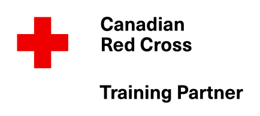

Courses accepted by WorkSafeBC as Basic (OFA 1) and Intermediate (OFA 2)First aid for childcare workers in BC
BC licensing rules for child care require staff to hold a valid first aid certificate. Many employers ask for first aid that includes infant and child CPR.
What employers usually ask for
BC job postings for early childhood educators often list a valid first aid certificate with infant and child CPR, for example Emergency Child Care First Aid or Standard First Aid with CPR Level C. Check your job posting or your licensing officer for the exact course accepted.
Our courses
Our courses are OFA 1 (Basic / Emergency First Aid) for $75 and OFA 2 (Intermediate / Standard First Aid) for $130. Both are one-day Red Cross courses accepted by WorkSafeBC. Not sure which you need? Read OFA 1 vs OFA 2.
Tell us when you call 604-825-8882 that you work in child care, and we will confirm which class covers infant and child CPR and meets your employer requirement.
Register for your course
Click a course to open the registration form, or call 604-825-8882.